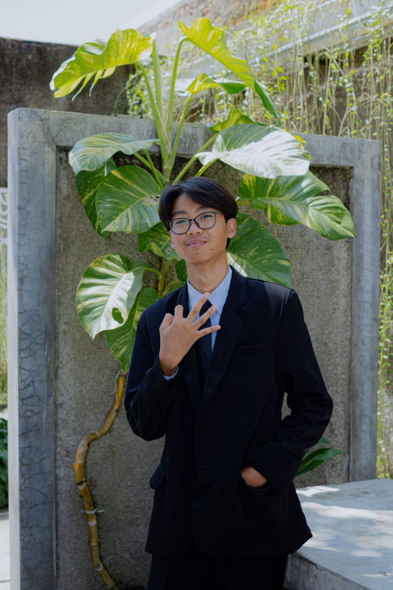

MINAT
Technology & Web Development
Tertarik pada perkembangan teknologi, pengembangan website, dan analisis sistem informasi.
INFORMATION SYSTEMS STUDENT · DIGITAL IDENTITY
Exploring Technology, Creating Possibilities.
Saya merupakan mahasiswa Sistem Informasi yang memiliki ketertarikan pada teknologi, pengembangan website, serta analisis sistem. Website ini menjadi ruang untuk memperkenalkan diri, perjalanan pendidikan, pengalaman, dan karya yang saya kembangkan.

01 / ABOUT ME
Mengenal lebih dekat perjalanan, ketertarikan, dan prinsip yang menjadi bagian dari proses perkembangan diri saya.
Saya adalah mahasiswa Sistem Informasi yang memiliki ketertarikan pada perkembangan teknologi, pengembangan website, dan analisis sistem. Saat ini, saya sedang membangun pemahaman serta mengembangkan kemampuan di bidang teknologi informasi melalui proses belajar dan eksplorasi.
Saya percaya bahwa setiap proses pembelajaran merupakan kesempatan untuk mengenali potensi diri, memperluas wawasan, dan menciptakan sesuatu yang bermanfaat. Bagi saya, perjalanan berkembang bukan tentang menjadi sempurna, melainkan tentang terus mencoba, belajar, dan memperbaiki diri.
Tertarik pada perkembangan teknologi, pengembangan website, dan analisis sistem informasi.
Di luar aktivitas akademik, saya menikmati membaca komik sebagai salah satu bentuk hiburan dan cara menikmati cerita melalui perpaduan narasi serta ilustrasi visual.
“Belajar, berkembang, berkarya.”
02 / MY DEVELOPMENT
Beberapa bidang yang sedang saya pelajari dan kembangkan sebagai mahasiswa Sistem Informasi.
Mempelajari proses analisis kebutuhan, pemahaman alur sistem, dan identifikasi permasalahan.
Mengenal dan mengembangkan website menggunakan teknologi dasar pengembangan web.
Mengembangkan kemampuan komunikasi, kerja sama tim, dan penyampaian ide.
03 / EDUCATION JOURNEY
Perjalanan pendidikan yang menjadi bagian dari proses pembelajaran dan perkembangan diri saya.
Program Studi Sistem Informasi
Semester 1
Rekayasa Perangkat Lunak (RPL)
Jenjang SMK
Pendidikan Menengah Pertama
Jenjang SMP04 / CERTIFICATES & ACHIEVEMENTS
Dokumentasi sertifikat kompetensi yang menjadi bagian dari perjalanan belajar dan pengembangan kemampuan saya.
BNSP & LSP SMK Muhammadiyah Majenang
Majenang · 5 Juni 2026
BNSP & LSP Teknologi Informatika Bisnis Digital
Tangerang · 30 Mei 2026
05 / SELECTED WORKS
Beberapa proyek yang pernah saya kerjakan sebagai bagian dari pengalaman belajar dan pengembangan kemampuan di bidang teknologi informasi.
Website sistem informasi perpustakaan yang dikembangkan untuk membantu pengelolaan data perpustakaan. Proyek ini mencakup fitur CRUD serta autentikasi login dan logout.
Proyek website bertema informasi pendidikan yang menjadi bagian dari pengalaman awal saya dalam mengenal dan mempelajari proses pengembangan website.
06 / GET IN TOUCH
Terima kasih telah mengunjungi portfolio saya. Saya terbuka untuk belajar, berbagi ide, dan membangun koneksi positif.